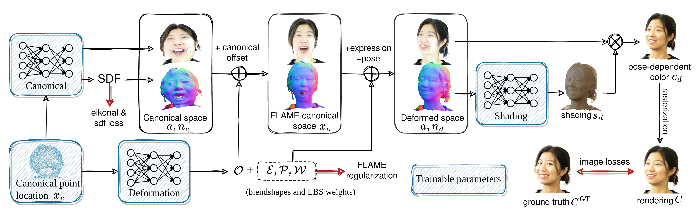

PointAvatar: Deformable Point-based Head Avatars from Videos
Abstract
The ability to create realistic, animatable and relightable head avatars from casual video sequences would open up wide ranging applications in communication and entertainment. Current methods either build on explicit 3D morphable meshes (3DMM) or exploit neural implicit representations. The former are limited by fixed topology, while the latter are non-trivial to deform and inefficient to render. Furthermore, existing approaches entangle lighting in the color estimation, thus they are limited in re-rendering the avatar in new environments. In contrast, we propose PointAvatar, a deformable point-based representation that disentangles the source color into intrinsic albedo and normal-dependent shading. We demonstrate that PointAvatar bridges the gap between existing mesh- and implicit representations, combining high-quality geometry and appearance with topological flexibility, ease of deformation and rendering efficiency. We show that our method is able to generate animatable 3D avatars using monocular videos from multiple sources including hand-held smartphones, laptop webcams and internet videos, achieving state-of-the-art quality in challenging cases where previous methods fail, e.g., thin hair strands, while being significantly more efficient in training than competing methods.
Video
Method
Given a monocular RGB video of a subject performing various expressions and poses, our model jointly learns (1) a point cloud representing the pose-agnostic geometry and appearance of the subject in a canonical space; (2) a deformation network that transforms the point cloud into new poses using FLAME expression and pose parameters extracted from the RGB frames; (3) a shading network that outputs a per-point shading vector based on the point normals in the deformed space. The three components can be jointly optimized by comparing the renderings with the input frames.
Result
Learned 3D Point Clouds
PointAvatar learns 3D head geometry, represented as point clouds, from monocular RGB videos.
Note that the back of heads are not visible in the training videos and are therefore also not represented by our method.
Relighting
BibTeX
@misc{Zheng2022pointavatar,
author = {Yufeng Zheng and Wang Yifan and Gordon Wetzstein and Michael J. Black and Otmar Hilliges},
title = {PointAvatar: Deformable Point-based Head Avatars from Videos},
publisher = {arXiv},
year = {2022},
}